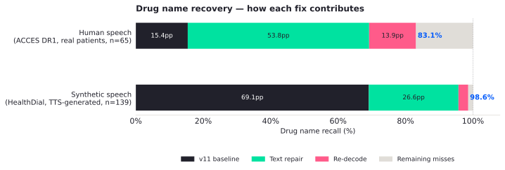
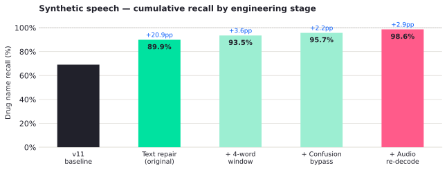
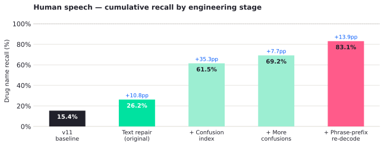
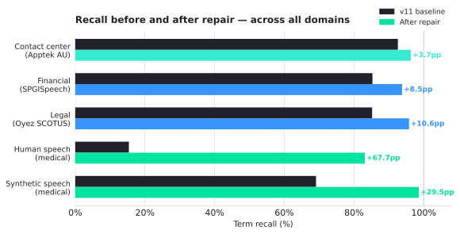

—
Recall Before (Synthetic speech)
—
Recall After (Synthetic speech)
—
Recall Before (Human speech)
—
Recall After (Human speech)
Transparent proxy
Sits between v11 and your downstream consumer. No changes to the model, the client, or the integration contract.
Layered repair
Text-first phonetic path handles 95.7% of errors in under 35ms. Audio re-decode kicks in only for the hard cases.
Zero false positives
Context gate and suspect detection mean the pipeline only fires in medical context. Silence beats a wrong correction.
No new infrastructure
Re-decode reuses the v11 instance already in production. The sidecar's text path runs CPU-only.



Beyond healthcare
The repair chassis is domain-agnostic. We ran the same pipeline against three non-medical datasets as a proof of concept — swapping only the vocabulary index.
Legal
+10.6pp85.2% → 95.8% · SCOTUS oral arguments
Latin and French legal terms are phonetically unpredictable — the same multi-word sliding window that catches "time for a tweet" catches "ultra vires" and "stare decisis."
certiorari
ultra vires
Section 10(b)
stare decisis
Auer deference
Kisor
Financial
+8.5pp85.3% → 93.8% · SPGISpeech earnings calls
Acronym-heavy financial vocabulary — EBITDA, GAAP, year-over-year — follows the same out-of-vocabulary pattern as drug names in ASR output.
EBITDA
EBITDA margin
year-over-year
GAAP
Contact center
+3.7pp92.6% → 96.3% · Apptek AU English calls
v11 handles everyday contact center vocabulary well — the strong baseline reflects that. Repair adds a further lift on specialist terms like policy holder and superannuation.
policy holder
superannuation
investment loan

Proof of concept — threshold tuning for short common words is the next step before production use in non-medical domains. Some false positives were observed on ambiguous short-word matches.